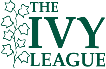

Harvard University
Harvard University is a private  Ivy League research university in Cambridge, Massachusetts. Founded in 1636 as Harvard College and named for its first benefactor, the Puritan clergyman John Harvard, it is the oldest institution of higher learning in the United States and regarded as one of the most prestigious in the world.
Some Facts
- Former names Harvard College
- Motto Veritas (Latin)
- Motto in English Truth
- Type Private research university
- Established 1636; 386 years ago
-
Students 19,218 (Fall 2020)
- Undergraduates 5,222 (Fall 2020)
- Postgraduated 13,996 (Fall 2020)
History
Main article: History of Harvard University
Colonial era
Harvard was established in 1636 by vote of the Great and General Court of the Massachusetts Bay Colony. In 1638, it acquired British North America's first known printing press. In 1639, it was named Harvard College after deceased clergyman John Harvard, an alumnus of the University of Cambridge who had left the school £779 and his library of some 400 volumes. The charter creating the Harvard Corporation was granted in 1650.
A 1643 publication gave the school's purpose as "to advance learning and perpetuate it to posterity, dreading to leave an illiterate ministry to the churches when our present ministers shall lie in the dust." It trained many Puritan ministers in its early years and offered a classic curriculum based on the English university model – many leaders in the colony had attended the University of Cambridge – but conformed to the tenets of Puritanism. Harvard has never affiliated with any particular denomination, though many of its earliest graduates went on to become clergymen in Puritan churches.
Increase Mather served as president from 1681 to 1701. In 1708, John Leverett became the first president who was not also a clergyman, marking a turning of the college away from Puritanism and toward intellectual independence.
19th Century
In the 19th century, Enlightenment ideas of reason and free will were widespread among Congregational ministers, putting those ministers and their congregations in tension with more traditionalist, Calvinist parties. When Hollis Professor of Divinity David Tappan died in 1803 and President Joseph Willard died a year later, a struggle broke out over their replacements. Henry Ware was elected to the Hollis chair in 1805, and the liberal Samuel Webber was appointed to the presidency two years later, signaling the shift from the dominance of traditional ideas at Harvard to the dominance of liberal, Arminian ideas.
Charles William Eliot, president 1869–1909, eliminated the favored position of Christianity from the curriculum while opening it to student self-direction. Though Eliot was the crucial figure in the secularization of American higher education, he was motivated not by a desire to secularize education but by Transcendentalist Unitarian convictions influenced by William Ellery Channing and Ralph Waldo Emerson.
Programs in the study of French and Spanish languages began in 1816 with George Ticknor as its first professor.
20th Century
In the 20th century, Harvard's reputation grew as a burgeoning endowment and prominent professors expanded the university's scope. Rapid enrollment growth continued as new graduate schools were begun and the undergraduate college expanded. Radcliffe College, established in 1879 as the female counterpart of Harvard College, became one of the most prominent schools for women in the United States. Harvard became a founding member of the Association of American Universities in 1900.
The student body in the early decades of the century was predominantly "old-stock, high-status Protestants, especially Episcopalians, Congregationalists, and Presbyterians." In 1923—a year after the percentage of Jewish students at Harvard had reached 20%—President A. Lawrence Lowell supported a policy change that limited Jewish students to 15% of the undergraduate population. While Lowell's idea was rejected, he did manage to ban black students from freshman dormitories.
21st Century
Drew Gilpin Faust, previously the dean of the Radcliffe Institute for Advanced Study, became Harvard's first female president on July 1, 2007. She was succeeded by Lawrence Bacow on July 1, 2018.
Notable people
Alumni
Main articles: List of Harvard University people, List of Harvard University non-graduate alumni, and List of Nobel laureates affiliated with Harvard University
Over more than three and a half centuries, Harvard alumni have contributed creatively and significantly to society, the arts and sciences, business, and national and international affairs. Harvard's alumni include eight U.S. presidents, 188 living billionaires, 79 Nobel laureates, 7 Fields Medal winners, 9 Turing Award laureates, 369 Rhodes Scholars, 252 Marshall Scholars, and 13 Mitchell Scholars. Harvard students and alumni have won 10 Academy Awards, 48 Pulitzer Prizes, and 108 Olympic medals (including 46 gold medals), and they have founded many notable companies worldwide.
Notable Harvard alumni include:

2nd President of the United States John Adams (AB, 1755; AM, 1758)

6th President of the United States John Quincy Adams (AB, 1787; AM, 1790)

26th President of the United States and Nobel Peace Prize laureate Theodore Roosevelt (AB, 1880)

32nd President of the United States Franklin D. Roosevelt (AB, 1903)

35th President of the United States John F. Kennedy (AB, 1940)

43rd President of the United States George W. Bush (MBA, 1975)

44th President of the United States and Nobel Peace Prize laureate Barack Obama (JD, 1991)

Founder of Microsoft and philanthropist Bill Gates (College, 1977; LLD hc, 2007)

Founder of Facebook Mark Zuckerberg (College, 2004; LLD hc, 2017)
 Louis Agassiz
Louis Agassiz
 Danielle Allen
Danielle Allen
 Cornel West
Cornel West